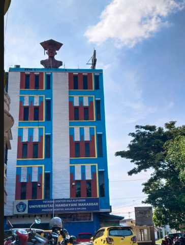

Sejarah Universitas
Handayani Makassar
Perjalanan panjang membangun pendidikan berkualitas dan mencetak generasi unggul di era digital.
Perjalanan panjang membangun pendidikan berkualitas dan mencetak generasi unggul di era digital.
Tahun Berdiri
Alumni
Dosen Profesional
Program Studi

Dedikasi Pendidikan
Universitas Handayani Makassar merupakan perguruan tinggi yang berkembang dengan fokus pada pendidikan teknologi, ilmu komputer, bisnis, dan bidang keilmuan lainnya.
Sejak awal berdiri, Universitas Handayani terus berkomitmen meningkatkan kualitas pendidikan melalui pengembangan kurikulum, fasilitas modern, dan tenaga pengajar profesional.
Dengan semangat inovasi dan transformasi digital, Universitas Handayani terus berkembang menjadi kampus yang siap menghadapi kebutuhan industri masa depan.
Tahapan perkembangan Universitas Handayani Makassar
Universitas Handayani memulai perjalanan sebagai institusi pendidikan yang berfokus pada bidang komputer dan teknologi.
Melakukan pengembangan program studi dan meningkatkan kualitas pembelajaran sesuai kebutuhan zaman.
Terus berinovasi menghadirkan pendidikan berbasis teknologi untuk menghasilkan lulusan berkualitas.